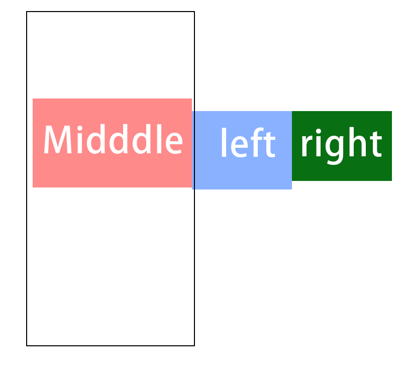

思路：
1. 首先，middle 得放最前面，width:100%, 因为他是自适应的部分
2. 然后，因为要考虑到左200,右260，所以，必然有一个content，margin: 0 260px 0 200px;
3. 希望下面的元素与middle一排，必然，需要flaot:left(这里有问题/right;都可以？？？)
4. 因为left需要到最左边，但整个的100%都被.content的外层占据了，所以，这里需要margin-left:-100%;才可以达到左边
5. 所以，右边的在屏幕外，只要移动他本身的宽度就可以达到右侧了
6. 下图已经说明一切了
